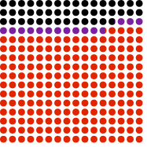
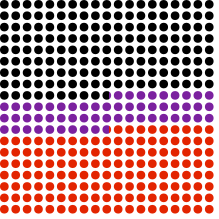
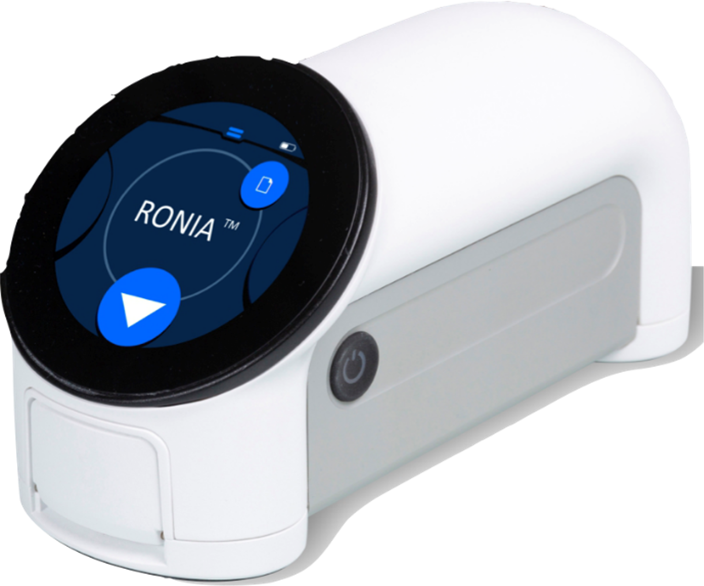
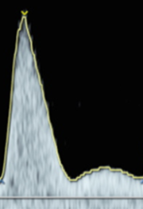
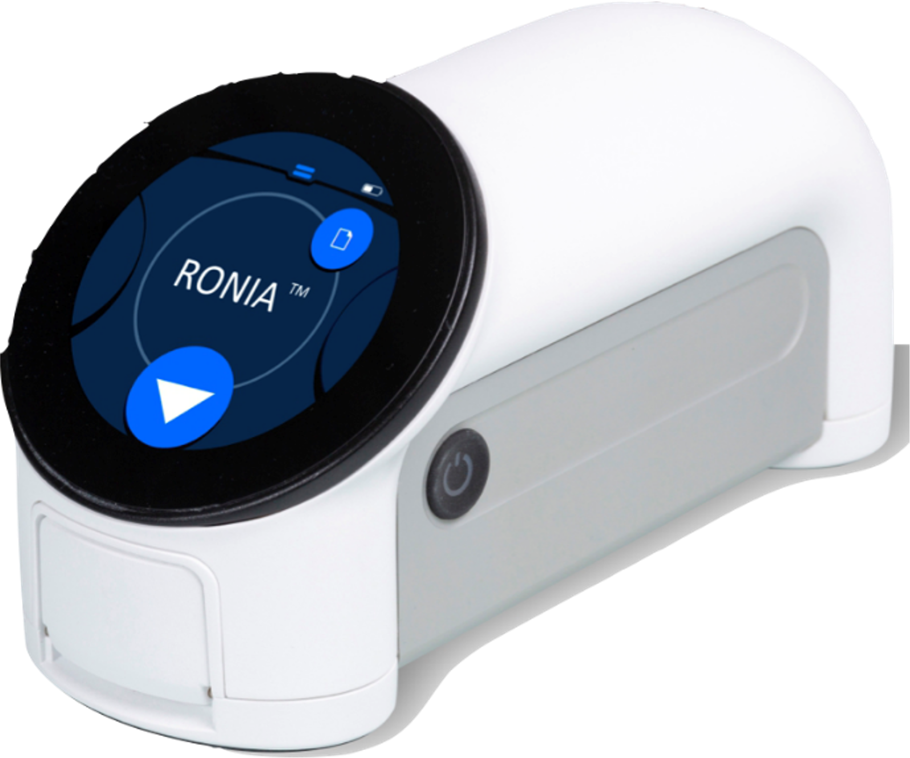
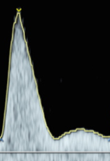

Screen SMART
Multi-modal prediction of major pregnancy complications
What’s the scale of the problem?
MMR per 100,000 births. Population attributable fraction of preeclampsia and haemorrhage.1





Haemoglobin: the starting point
Preeclampsia is predictable
Detection rate: 40%

Detection rate: ~5%

 

Detection rate: 70%
Preeclampsia is preventable

Study
Population
n = 10,000
Unselected early pregnancy cohort
EGA < 20/40
Singleton pregnancy
Age 16+
Sites & Facilities
n = 5,000
3 hospital
40 community
n = 5,000
4 hospital
42 community
Aims: Screen SMART anaemia
Product development
Test validation
Implementation potential
Aims: Screen SMART preeclampsia
Product development
Test validation
Feasible & accurate, prediciton
Acknowledgements
Supervisors:
Dr Antonio de Marvao
Prof Bellington Vwalika
Dr Kate Bramham
Dr Alex Ridout
Prof Andrew Shennan


{kind=link}
{kind=link}
{kind=link}
{kind=link}
{kind=link}
{kind=link}
{kind=link}
{kind=link}
{kind=link}
{kind=link}
{kind=link}
{kind=link}
{kind=link}